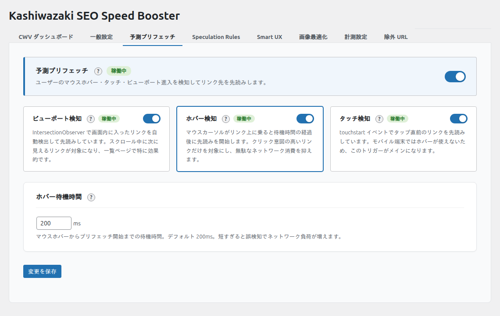

予測プリフェッチ
ユーザーの行動を予測してリンク先のページを事前に読み込むことで、ページ遷移を高速化します。
予測プリフェッチとは
予測プリフェッチは、ユーザーがリンクをクリックする前にリンク先のリソースをバックグラウンドで読み込む技術です。ブラウザの <link rel="prefetch"> を使用して、次に訪問する可能性の高いページを先読みします。これにより、実際にリンクをクリックした時にページがほぼ瞬時に表示されます。
設定画面

設定項目の詳細
ビューポートプリフェッチ prefetch_viewport
- 画面に表示されているリンクを自動的にプリフェッチします
- IntersectionObserver API を使用してビューポート内のリンクを検出
- ユーザーがスクロールして見えるリンクが自動的にプリフェッチ対象になります
- 適している場面: 記事一覧ページやナビゲーションが多いサイト
ホバープリフェッチ prefetch_hover
- マウスカーソルがリンクの上に乗った時にプリフェッチを開始
- ホバーディレイ（ミリ秒）で開始までの待機時間を設定可能（デフォルト: 200ms、範囲: 0〜2000ms）
- 意図しないプリフェッチを防ぐため、短すぎるディレイは避けることを推奨
- 適している場面: デスクトップユーザーが多いサイト
タッチプリフェッチ prefetch_touch
- モバイルデバイスでリンクをタッチした瞬間にプリフェッチを開始
- touchstart イベントを使用し、クリックイベントより先にプリフェッチを開始
- 適している場面: モバイルユーザーが多いサイト
ホバーディレイ prefetch_hover_delay_ms
- ホバーからプリフェッチ開始までの待機時間（ミリ秒）
- デフォルト値: 200ms
- 設定範囲: 0〜2000ms
- 0ms にすると即座にプリフェッチが開始されますが、不要なプリフェッチが増える可能性があります
動作の仕組み
予測プリフェッチは以下の流れで動作します。
- フロントエンドの JavaScript (
booster.js) がページ読み込み後に動作 - 同一オリジンのリンクのみが対象（外部サイトのリンクはスキップ）
- 除外パターンに一致する URL はスキップ
- 既にプリフェッチ済みの URL は重複して読み込まない
<link rel="prefetch">タグを動的に<head>に挿入- 管理画面・フィード・robots.txt・トラックバック等のページでは自動的に無効化
自動スキップされるリンク
以下のリンクはプリフェッチ対象から自動的に除外されます:
rel="nofollow"またはrel="external"が付いたリンクdata-wpsb-no-prefetchまたはdata-no-prefetch属性が付いたリンクmailto:、tel:、javascript:、#で始まるリンク- EC サイト向けクエリパラメータを含むリンク（
add-to-cart、remove_item、_wpnonce、action=logout、action=delete）
ヒント
特定のリンクを個別にプリフェッチ対象から除外したい場合は、data-wpsb-no-prefetch 属性を追加してください。
ノート
予測プリフェッチはブラウザの <link rel="prefetch"> を使用するため、すべてのモダンブラウザで動作します。Speculation Rules API とは独立して機能します。
推奨設定
| サイトの特性 | ビューポート | ホバー | タッチ | ディレイ |
|---|---|---|---|---|
| デスクトップ中心のブログ | オフ | オン | オフ | 200ms |
| モバイル中心のサイト | オフ | オフ | オン | — |
| 高トラフィックサイト | オフ | オン | オン | 300ms |
| 回遊率を上げたいメディア | オン | オン | オン | 100ms |
注意
ビューポートプリフェッチは表示中の全リンクをプリフェッチするため、サーバー負荷が増加する可能性があります。高トラフィックサイトでは慎重に有効化してください。